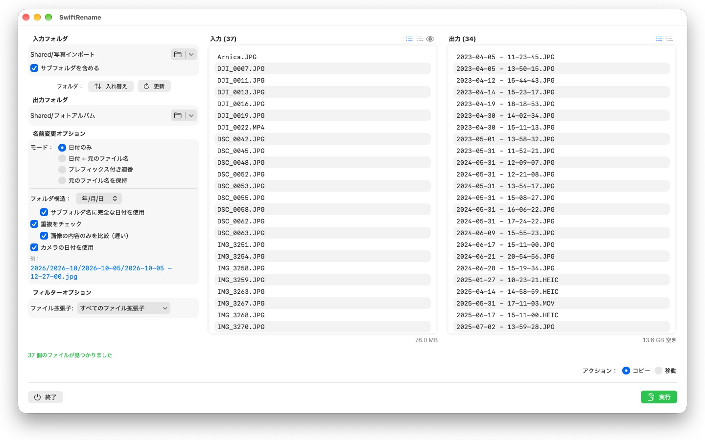
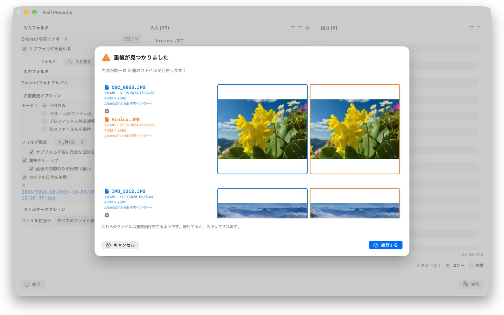

何百枚もの写真やファイルをまとめてリネーム。撮影日時（EXIF）による名前付け、連番、年・月別フォルダへの整理に対応。重複ファイルは自動で検出されます。


SwiftRenameは、Mac上でファイルの名前変更・コピー・移動を一括で行える強力なツールです。フォルダを選び、新しい名前の形式を決めて、ライブプレビューで確認したら、あとは実行するだけです。
■名前変更モード
・「日付のみ」：ファイルの日付を名前にします（例：2024-01-15 14-30-00）
・「日付 + 元のファイル名」：日付を先頭に付けて、元の名前を保持します
・「プレフィックス付き連番」：任意のプレフィックスを付けた連番にします（例：旅行_0001）
・「元のファイル名を保持」：名前はそのままに、ファイルをフォルダに整理するだけです
■フォルダ構造
年・月・日ごとに、ファイルを自動的にフォルダへ振り分けます。「サブフォルダ名に完全な日付を使用」を選べば、すべてのサブフォルダ名に完全な日付を含めることもできます（例：2026/2026-02/2026-02-20）。複数の年代にまたがるファイルには、さらに年代ごとのフォルダが作成されます。また、「保持」を選ぶと、元のフォルダのサブフォルダ階層をそのまま出力先に再現します。
■撮影日時（EXIF）
写真や動画には、実際に撮影された瞬間の日時が名前として使われます。SwiftRenameは、主要カメラメーカー（Canon、Nikon、Sony、Fujifilmなど多数）のRAW形式をはじめ、HEIC、JPEG、PNG、TIFF、一般的な動画形式から撮影日時（EXIF）を読み取ります。撮影日時がないファイルには、代わりに作成日が使われます。
■重複ファイルの検出
重複ファイルは、ファイルサイズと内容にもとづいて検出されます。作成日には依存しないため、タイムスタンプが異なる同じ写真も見逃しません。オプションの画像比較を使えば、他のアプリで再保存された写真まで見つけ出せます。サムネイルプレビューで両方のファイルを並べて比較でき、重複ファイルは自動的にスキップされます。
■その他の機能
・ワンクリックでコピーまたは移動（同じフォルダ内でのその場での名前変更にも対応）
・最近使った入力・出力フォルダにすばやくアクセス
・サブフォルダを含めた処理、ファイルリストのフラット表示／フォルダツリー表示
・複数選択できる拡張子フィルタ
・実行前に新しい名前をライブプレビューで確認
・操作全体の取り消しとやり直し（Cmd+Z）
・ファイル名とパーセント付きの進捗表示、いつでもキャンセル可能
・実行前に空きディスク容量をチェック
・Finderからフォルダをそのままドラッグ＆ドロップ
24言語に対応：英語、ドイツ語、チェコ語、クロアチア語、オランダ語、フィンランド語、フランス語、ハンガリー語、イタリア語、日本語、韓国語、ノルウェー語（ブークモール）、ペルシア語、ポーランド語、ポルトガル語、ルーマニア語、ロシア語、スペイン語、スウェーデン語、タイ語、トルコ語、ウクライナ語、中国語（簡体字・繁体字）。
すべての処理はお使いのMac上だけで行われます。ネットワーク接続なし、アカウント不要、データ収集も一切ありません。
- macOS 12 以降が必要
- 24 言語に対応
- サポート： SwiftAppsBavaria@gmx.net
その他のApp
sCollectPlay
メディアライブラリのためのプレーヤー。単にフォルダ、iTunes XML、またはsCollectライブラリから、音楽、映画、オーディオブック、ポッドキャストを再生 — ファイルのタグは一切変更されません。
sName2Date
ファイル名の日付を撮影日時として写真、動画、録音に書き込み — IMG_20240115_103000.jpg のようなファイルが、どの写真管理アプリでも正しく並ぶようにします。
sName2Date Lite
一度に 1 つのファイルを扱う版。ファイル名の日付を撮影日時として写真、動画、録音に書き込み、手動で設定し、名前をISO形式にそろえ、すべてを ⌘Z で取り消せます — sName2Date と同じ機能を備えていますが、フォルダ単位の処理はできません。
sCollectPlay Lite
sCollectPlayの軽量版。フォルダ、iTunes XML、またはsCollectライブラリを開くだけで、音楽、映画、オーディオブック、ポッドキャストを再生 — プレイリスト、音声トラック、字幕トラック、スローモーション、コマ送りに対応。1セッションにつきソースは1つ。カラムブラウザ、自分で作成するプレイリスト、最近使ったソースはフル版専用です。
sBikeBridge
ポータルにアップロードせずにライドを分析。FIT形式で記録するあらゆるサイクルコンピュータのFITファイルに加え、GPXとTCXも読み込めます。ライドはMac上の専用ライブラリに保存 — 地図、パワー、心拍数、写真、メモ付きで、重複はインポート時に検出されます。年別・月別の指標と、距離、獲得標高、所要時間によるフィルタでライドを比較できます。地図は必要に応じてオフラインでも利用できます。